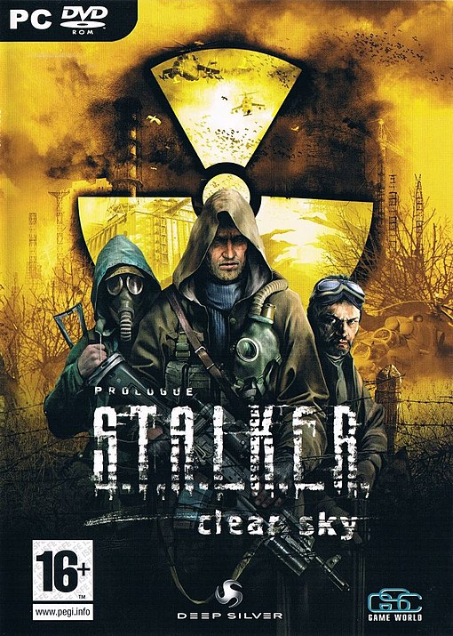
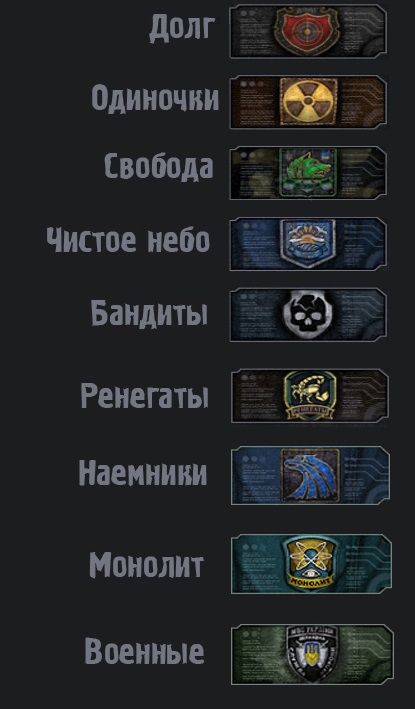

S.T.A.L.K.E.R. Clear Sky

| Розробник | GSC Game World |
|---|---|
| Видавець | GSC World Publishing (Україна) Deep Silver (Світ) |
| Дата виходу | 15 вересня 2008 (Північна Америка) 5 вересня 2008 (Австралія) 5 вересня 2008 (Європа) |
| Жанр | Шутер від першої особи Рольова відеогра |
| Платформа | Microsoft Windows |
| Системні вимоги | Microsoft Windows XP Процесор 2.0 GHz 512 MB ОЗП 10 ГБ на твердому диску 128 МБ DirectX 8 сумісна відеокарта |
| Наступна гра | S.T.A.L.K.E.R. Поклик Прип'яті |
| Попередня гра | S.T.A.L.K.E.R. Тінь Чорнобиля |
S.T.A.L.K.E.R.: Чисте Небо — друга частина трилогії S.T.A.L.K.E.R., що вийшла на персональні комп'ютери 29 серпня 2008 року. Гра є передісторією попередньої гри серії, S.T.A.L.K.E.R.: Тінь Чорнобиля.
Сюжет
У 2011 році група сталкерів підібралася дуже близько до центру Зони. В результаті стався найсильніший Викид, який повністю змінив Зону. Там, де раніше були безпечні території, з'являлися аномалії, і цілі загони сталкерів виявлялися замкненими серед них і гинули. Разом з тим від аномалій звільняються території, про які раніше нічого не було відомо. Розгорається ворожнеча між угрупуваннями за нові території, поля артефактів і сфери впливу. Починається війна угрупувань. Однак Зона залишається такою ж нестабільною, її часто турбують викиди…
Головним героєм є найманець на ім'я Шрам. Він вів по Зоні групу вчених, коли стався великий викид. Всі члени групи загинули, проте найманець вижив. Він був знайдений сталкерами угруповання «Чисте небо» — таємного угруповання, яке вивчало Зону і причини її появи. Сталкери доставили тіло Шрама на базу угруповання, де він прийшов до тями.
Угрупування
Сталкери(Одиночки)
Вільні волоцюги, які не належать до угрупувань. Займаються, в основному, пошуком і продажем артефактів а також спорядження, боєприпасів і зброї. Рідше наймаються на яку-небудь неважку роботу, наприклад, охорону будь-якого об'єкта. Сталкери контролюють Кордон і НДІ «Агропром» (разом з «Обов'язком»), ведуть боротьбу з бандитами за Звалище. Невеликі групи є на локаціях «Янтар» (охороняють вчених), «Армійські склади» і «Рудий ліс». Являють собою фактично кілька незалежних один від одного угруповань зі своїми командирами. Батько Валер'ян керує сталкерами на Кордоні, Орест — на «Агропромі», загоном одинаків, що охороняють бункер вчених, керує сталкер на прізвисько «Лісний». Мають дві великі бази (на Кордоні за залізничним насипом) і в одному з будинків на Агропрому зі своїми торговцями і зброярами.
Бандити
Представники кримінального світу, що прийшли в Зону з різних причин: заробити на продажі артефактів, сховатись від закону, купити або продати зброю. Основне заняття — грабіж і здирства у вільних сталкерів. Бандити вважають, що оскільки вони контролюють «порядок» в Зоні, одинаки зобов'язані їм за це платити. Вони майже повністю контролюють Звалище. У них є своя база в старому депо з барменом, торговцем і зброярем, а також «концтабір» — звалище старих автомобілів, де потрапили в боргове рабство або полон сталкери змушені шукати артефакти в аномаліях. У цій частині бандити являють собою чітко організоване угруповання на чолі з рецидивістом Йогою, куди навіть може вступити сам головний герой Шрам. Для цього треба не брати участь в антибандитських операціях сталкерів і пройти три квести, взяті у Йоги (вбивство стукача, вбивство сталкерів, які готують напад на бандитів, і «наведення порядку» на барахолці). Носять чорні шкіряні плащі та куртки. Неофіційний символ — череп і кістки. Озброєння, як правило, примітивне (що робить їх безпечними супротивниками) — обріз дробовика, пістолет Макарова, пістолет-кулемет «Гадюка», зрідка — перші модифікації автомата Калашникова. Ворогують зі сталкерами-одинаками і «Обов'язком», нейтральні до найманців і «Свободи». З іншими угрупуваннями відносин не мають.
«Долг»
Воєнізований сталкерський клан, один з провідних та найвпливовіших сталкерських кланів. Багато сталкерів «Долгу» — колишні військові з спецназу або інших армійських частин або прості добровольці. У клані діє про-армійський Статут, за порушення якого загрожує сувора догана або вигнання з клану. Як правило клан тримає нейтралітет з військовими оскільки знаходяться на службі Держави України. Продають або здають вченим всі знайдені артефакти, рідше використовують самі. З чуток, фінансуються спецслужбами України. У Києві також функціонує НДІ, що спеціалізується на екіпіровці «Долгу» — наприклад, сталкерський екзоскелет «Долгу» розроблений саме в цьому НДІ (на відміну від саморобних екзоскелетів місцевих анархістів «Воля»). Основні противники угруповання — клан «Воля» і «Моноліт», а також найманці і бандити. Основна база знаходиться в районі колишнього інституту НДІ агропром . Емблема — Червона мішень на тлі чорного щита. Озброєння Переважно радянського і російського виробництва. На озброєнні (частіше всього): АКС-74, АН-94 «Обокан», пістолети Макарова, Форт-12, СГК ОЦ-14 «Гроза», СВД, з іноземного — L85A2. Командувач Генерал Крилов. ставлять собі за основну мету взяти Зону під контроль, а після — знищити її. Також вони вимагають обмеження вільного доступу до інформації про Зону. До звичайних сталкерів ставляться нейтрально, але негативно до тих, хто занадто тісно взаємодіє з Зоною. Давній противник — «Воля», що проповідує різко протилежні погляди — на їхню думку, — треба вміти співіснувати з Зоною та висвітлити доступ до неї.
«Воля»
Угрупування сталкерів-анархістів, які вважають, що Зона повинна бути вільною у вивченні, і оспорюють це право у держави. Не хочуть прямого знищення Зони, навпаки — зберегти і використовувати як «двигун» прогресу всього людства в цілому. Головний ворог — «Долг». У 2011 році база знаходилася в Темній долині, а лідер і один із засновників угрупування — Чехов. Пізніше, база перенесена на Армійські склади, а лідером угрупування став Лукаш. Носять камуфляжні зелено-руді комбінезони і сіро-жовті екзоскелети; озброєні зброєю НАТО або АК-74. Емблема Свободи — зелений вовк.
«Моноліт»
Агресивне угруповання, що перешкоджає просуванню сталкерів до центру Зони. Її члени вірять, що в центрі Зони спочиває еволюційний кристал неземного походження — Моноліт. Створена як секта, угруповання виступала за недоторканність всього, що пов'язано з Зоною. Після супервикиду 2011 була зомбовані О-Свідомістю для усунення загроз проникнення. Основні сили концентрувалися в Прип'яті. Після відключення Випалювача мізків почався процес деградації. Відрізняються сіро-білими комбінезонами і блідо-сірими екзоскелетами. Сектанти добре озброєні і екіпіровані, їм належить «доведення» знаменитої Гаус-гармати. Емблема «Моноліту» — людський силует з обертовими навколо електронами.
Військові
Еліта української армії — Контингент військ, що знаходиться в Зоні і охороняє її. Іноді проводять експедиції углиб Зони. До сталкерів, як правило відносяться агресивно, тому що формально всі неофіційні особи в Зоні є «місцевою фауною» і підлягають знищенню. На озброєнні мають гелікоптери, танки та БТР, але, як правило, використовують їх лише для спецзавдань. Солдати, що пройшли після досвіду служби в Зоні спеціальну підготовку, або сталкери, які підписали контракт з армією. Забезпечуються великою кількістю допоміжної апаратури, добре озброєні і екіпіровані. В основному, використовуються для вивчення причин і наслідків катастрофи, а також займаються картографування Зони. Можуть ходити як поодинці, так і групами до п'яти чоловік. Звичайних сталкерів до себе не підпускають — відразу ж відкривають вогонь. Проте буває і так, що військові охороняють вчених, оскільки ті не мають навичок повождення зі зброєю.
Найманці
Це представниками західних компаній і спецслужб у Зоні, так звані солдати фортуни які виконують приватні завдання . Найзагадковіше і найтаємніше угруповання в Зоні. Добре оснащені, одягнені в бузково-сірі комбінезони з протигазами або такого ж кольору екзоскелети. Попри це, внаслідок недосвідченості, часто гинуть в аномаліях. Як правило, агресивні до сталкерів. Емблема найманців — синій орел.
«Чисте небо»
Угрупування сталкерів-екологів. Відрізнялися від інших комбінезонами небесного кольору. Було практично повністю знищено в 2011 році, окремі вижили представники розсіялися по Зоні або були зомбовані. Ретельно ховалася від інших сталкерів на болотах. Основна робота угрупування — дослідження Зони. Символ Чистого Неба — чайка.
«Ренегати»
Складалося виключно з наймерзенніших особистостей Зони. Бандити, мародери, зрадники і рецидивісти — колишні члени інших угруповань, що змінили і зрадили свої погляди. Цей набрід не має організованої структури і лідера як такого. Збиваючись у невеликі групи, полюють за легкою здобиччю. Вбивають та грабують, як правило, молодих і недосвідчених сталкерів. Найчастіше зустрічаються уздовж периметра аномальної зони відчуження. Ренегати — це найбільш аморальні сталкери, які настільки завинили перед своїм угрупуванням, що їх вигнали і ні під яким приводом не приймають назад. У них немає ні етики, ні моралі, ні законів. Їх терпіти не можуть всі сталкери, навіть бандити, які теж не особливо педантичні в плані моралі, але навіть вони вважають, що Ренегати живуть «не за поняттями». Їх загнали в саму глибину Зони — на болота, але навіть і там не залишали спроб знищити, що врешті-решт закінчилося успішно. Ренегати перейняли озброєння і оснащення у бандитів.